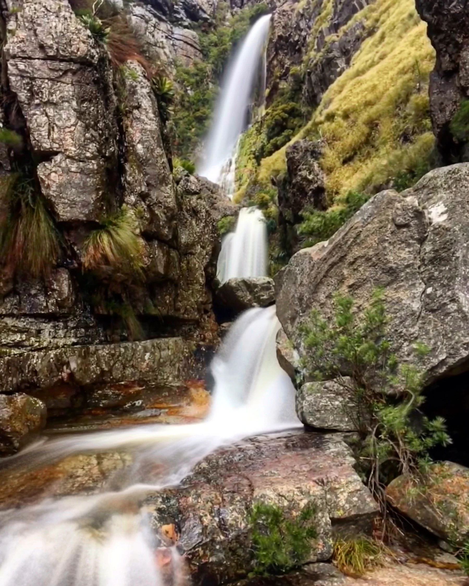
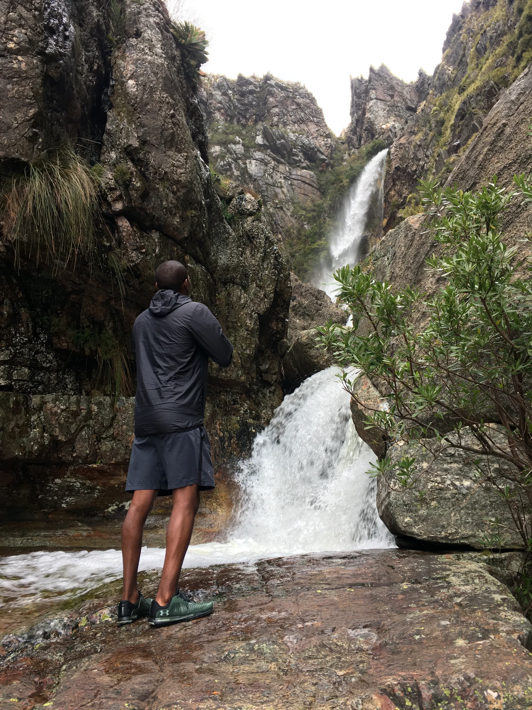
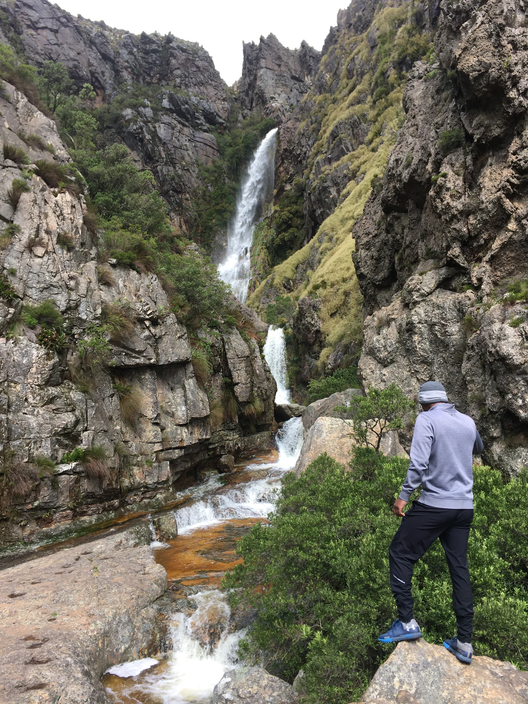
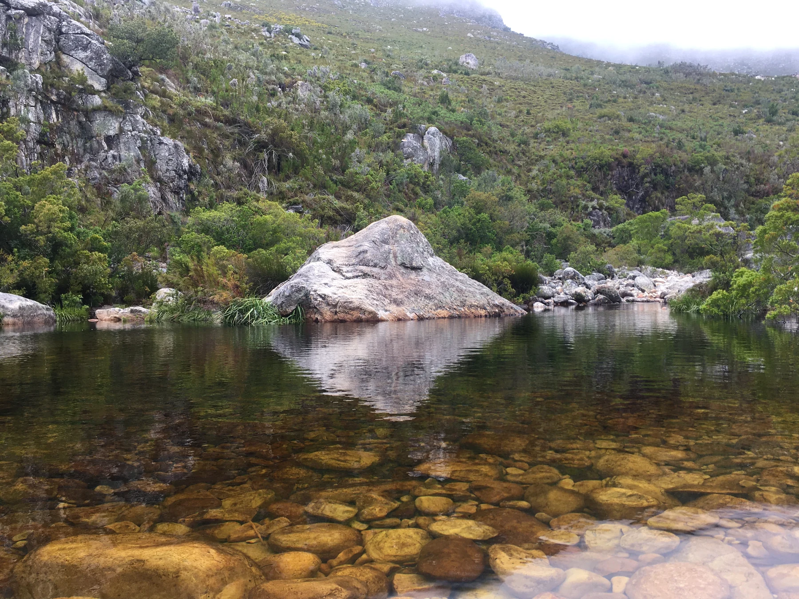
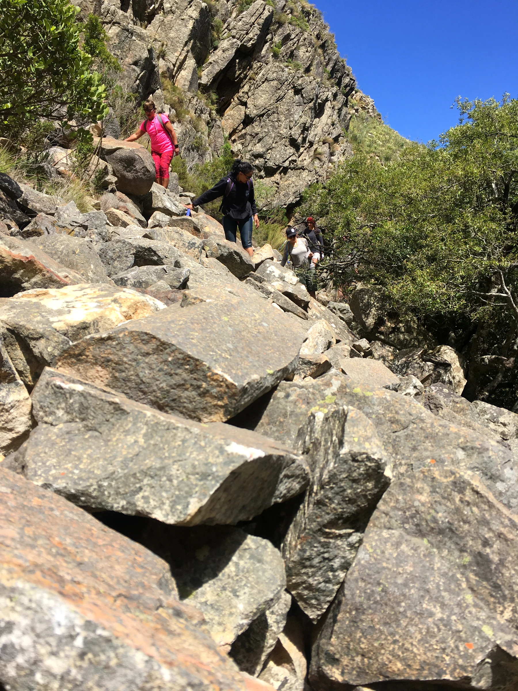

Cross the Witte River
Adventure begins almost immediately. Depending on conditions we rock-hop across or wade through, with your guide choosing the safest crossing.
Come for the waterfall. Remember the journey.
Some waterfalls are beside the road. This one makes you earn it.
The adventure begins with a crossing of the Witte River before we climb onto a mountain path and leave the pass behind. The landscape opens around us as we follow the valley deeper into the mountains, surrounded by fynbos, rock pools and increasingly little sign of civilisation.
Deep inside the ravine, the trail delivers its reward: a spectacular multi-tiered waterfall cascading over moss-covered rock into a secluded mountain pool. We stop here for lunch, photographs and an optional swim before retracing our journey.
Adventure begins almost immediately. Depending on conditions we rock-hop across or wade through, with your guide choosing the safest crossing.
We climb onto the mountain path and follow the valley deeper into Bainskloof as the road disappears behind us.
Mountain pools, seasonal streams and indigenous fynbos accompany the journey. Additional stops depend on group pace and conditions.
The established trail becomes steeper as we move toward the head of the ravine and the waterfall begins to reveal itself.
A multi-tiered waterfall flows over moss-covered rock into a secluded pool — time to eat, explore, photograph and cool off.
We retrace the route through the valley and cross the Witte River again before returning to the trailhead.





This adventure is weather and river-level dependent. Your guide assesses recent rainfall, forecasts and conditions before departure. If Outdoor Addicts cancels for safety, you may move your booking or receive a full refund.
Permits are included where required. Transport from Cape Town is optional and subject to availability.
OA transport is limited to 6 guests and subject to availability. For larger groups, private transfers can be arranged and quoted separately.